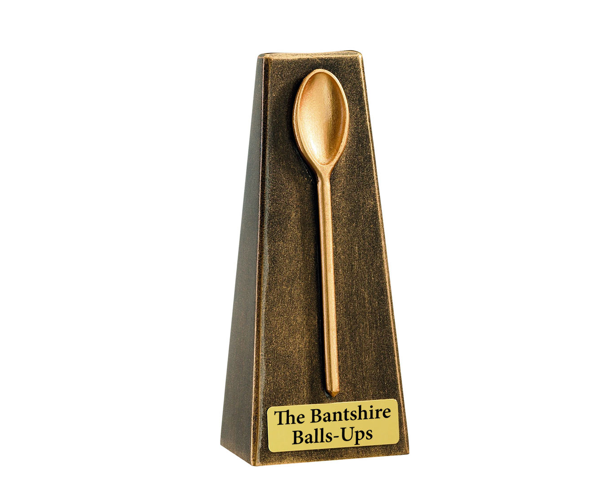

The Bantshire Balls-Up Awards
The biggest event in the higher education calendar is back for 2020. Just not here.
Warning: foul language below fold.

Because there aren't already enough Higher Education awards.
Celebrating the achievements of university pixel-arrangers and shit-scribblers. For literally days, @BantshireUni has been synonymous with balls-ups and faux pas in education marketing. Let's celebrate and come together.

The categories
Just bang together a few random categories, yeh? Design a naff certificate in Paint, use a copyright free website template, then charge cash-strapped universities £395 to enter. Simples.
Go on, enter one or two, you absolute legends. You deserve it.
Enter now!
Nominate your colleagues for an award on our Twitter. Enter individual categories using the links above, or view the whole awards thread using the button below. Closing date is whenever. Winners will be selected alphabetically, and will win a digital copy of the Balls-Up trophy plus a message from our Vice-Chancellor if he can be bothered.
The Best of Bantshire
We have most of our ideas in the work loos. It's our quiet place. Usually, ideas are based on a real life situation that are too unbelievable for the irl university account. If you want to submit your own idea, DM us on Twitter. You will remain anonymous (because we will take the credit).
What's going on here?
(a) We apologise for our hastily planned campaign. It has since been shelved and we will cooperate fully with the police enquiry. #TeamBantshire
(b) We apologise to our Vice-Chancellor for this unfortunate photo taken of him during a chat with Geography graduates. The words behind him actually said “pratique rend parfait in a hard employment”.
(c) We’re cock-a-hoop to be ranked in the Top 601 in the WTF More University Rankings, for our Carbon Neutral Closed Loop Collaborative Consumption Fair Trade Canteen Facilities.
(d) We are sorry if you have received a copy of our 2020 prospectus with this profanity on page 169. This is following a dispute with our printers.

{kind=link}
{kind=link}
{kind=link}
We're a self-facilitating media node
We're also on YouTube. The Vice-Chancellor has requested that we go viral. We're going to knock together a few doctored screenshots to keep him happy.
Watch our TV advert. Tune into ITV5 tonight at 7pm to watch our new advert! Rated 18+ for foul language.
Hitler reacts to the National Student Survey. What the fuck!?
Covering our arses
Bantshire University is run by an absolute ledge who works in higher education. It's totes obvs a parody account and not intended to upset or troll anyone - you snowflake. We love higher education, but equally enjoy the idea that in an alternate universe there is a university as bad as Bantshire. Or maybe in this universe.
Names, characters, businesses, places, events, locales, and incidents are either the products of the author's imagination or used in a fictitious manner. Any resemblance to actual any of the above, living or dead, or actual events is purely coincidental - including our Vice-Chancellor, Professor Vincent Chancelier. Bantshire is not intended as a substitute for the expert advice of marketing and communications professionals. Most images are sourced from unsplash.com.
"Keep it foolish."
© The University of Bantshire. All rights reserved. Design: HTML5 UP. Images: Unsplash.